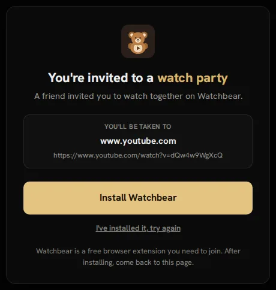

Netflix Party nazywa się teraz Teleparty.
Jak zrobić Netflix Party za darmo, z rozmową wideo
Chcesz obejrzeć ten sam film ze znajomym albo z drugą połówką, choć mieszkacie w różnych miastach? Wystarczy Chrome na komputerze i rozszerzenie, które trzyma odtwarzacze wszystkich w tym samym miejscu. Poniżej krok po kroku: jak użyć darmowego rozszerzenia Watchbear do wspólnego oglądania Netflixa, plus uczciwa odpowiedź w sprawie telefonu.
Czym jest Netflix Party?
To wspólne oglądanie Netflixa na odległość: wszyscy oglądają ten sam serial albo film w tej samej chwili, każdy u siebie, i przy okazji piszą albo rozmawiają. Gdy ktoś zatrzyma odcinek, zatrzymuje się u wszystkich. Gdy ktoś cofnie o kilka sekund, wszyscy wracają do tej samej sceny.
Nazwa pochodzi od rozszerzenia, które nazywało się Netflix Party. Dziś to rozszerzenie nazywa się Teleparty, ale hasło Netflix Party zostało i nadal tak się szuka tego sposobu oglądania.
Co jest potrzebne
- Chrome na komputerze. Watchbear to rozszerzenie do Chrome, więc każdy potrzebuje komputera stacjonarnego albo laptopa.
- Konto Google. Wszyscy logują się przez Google. Nie trzeba zakładać nowego konta ani pamiętać kolejnego hasła.
- Własne konto Netflix dla każdej osoby. Nikt nie dostaje filmu: każdy włącza go ze swojego konta.
- Ten sam tytuł w katalogu. Oferta Netflixa różni się w zależności od kraju. Jeśli oglądasz z kimś, kto mieszka za granicą, na przykład w Wielkiej Brytanii albo w Niemczech, sprawdźcie najpierw, czy film jest w obu katalogach.
Wspólne oglądanie Netflixa z Watchbear: 4 kroki
Watchbear nie ma jeszcze polskiej wersji, więc przy Chrome po polsku rozszerzenie otwiera się po angielsku. Poniżej podajemy nazwy przycisków dokładnie tak, jak je zobaczysz, razem z tłumaczeniem.
-
Zainstaluj rozszerzenie i zaloguj się
Dodaj Watchbear z Chrome Web Store, przypnij ikonę misia do paska narzędzi i wybierz Continue with Google (kontynuuj przez Google).
-
Otwórz tytuł na Netflixie i załóż pokój
Włącz na Netflixie odcinek albo film, który chcecie obejrzeć. Kliknij misia i wybierz Start a party with this video (zacznij imprezę z tym filmem). Pokój otwiera się w panelu bocznym Chrome, tuż obok odtwarzacza.

Okno Watchbear. Start a party with this video zakłada pokój, a pole poniżej służy do wklejenia linku albo kodu od znajomego. -
Wyślij link z zaproszeniem
W panelu wybierz Copy invite link (kopiuj link z zaproszeniem) albo Send on WhatsApp (wyślij przez WhatsApp). Działa też krótki kod pokoju: znajomy wkleja go w pole Code or invite link i klika Join (dołącz).
Kto otworzy link bez Watchbear, najpierw zobaczy przycisk instalacji. Potem trafi do tego samego odcinka i obejrzy go na swoim koncie Netflix.

To widzi znajomy po otwarciu linku. Przy przeglądarce po polsku strona wyświetla się po angielsku. -
Włączcie film, rozmawiajcie, reagujcie
Każdy w pokoju może włączyć, zatrzymać albo przewinąć film, a wszystkie odtwarzacze zostają na tej samej sekundzie. Jeśli chcecie pogadać, włączcie mikrofon albo kamerę w panelu. Twoja kamera jest wyłączona za każdym razem, gdy wchodzisz do pokoju.
Przy maratonie odcinków ustawcie Follow the host's video (podążaj za filmem gospodarza) na Auto: kiedy gospodarz przejdzie do kolejnego odcinka, wszyscy przejdą razem z nim.

Pokój na Netflixie z trzema osobami przed kamerą.
Netflix Party na telefonie?
Z Watchbear się nie da. Na razie Watchbear działa tylko w Chrome na komputerze, nie na smartfonach ani tabletach, więc każdy w pokoju potrzebuje komputera.
Jeśli ktoś musi oglądać z telefonu: według strony pomocy Teleparty Teleparty ma aplikację w Google Play i w App Store. Aplikacja na Androida obsługuje Netflix, Disney+, YouTube, Prime Video, HBO Max i Hotstar.
Rozszerzenie do Netflix Party: Watchbear czy Teleparty?
Oba rozszerzenia synchronizują Netflixa u wszystkich, a ponieważ nikt nie udostępnia ekranu, każdy ogląda w pełnej jakości. Różnice dotyczą rozmów wideo, ceny i urządzeń.
| Funkcja | Watchbear | Teleparty |
|---|---|---|
| Cena | Za darmo | Darmowy plan. Premium kosztuje 6,59 dolara amerykańskiego miesięcznie albo 3,99 dolara miesięcznie przy płatności rocznej (47,88 dolara) |
| Rozmowy wideo i głosowe | Za darmo dla wszystkich, do 8 osób jednocześnie | Tylko użytkownicy Premium mogą włączyć kamerę i mikrofon; pozostali ich widzą i słyszą |
| Serwisy | Netflix z osobnym dopasowaniem, do tego YouTube, Vimeo i większość stron ze standardowym odtwarzaczem | Stała lista: Netflix, Disney+, Hulu, Prime Video, YouTube i HBO Max za darmo; Crunchyroll, Paramount+ i ESPN+ w Premium |
| Liczba osób | Do 50 | Ponad 1000 |
| Przeglądarki | Chrome | Chrome, Edge, Safari i Opera |
| Telefon | Nie, potrzebny komputer | Aplikacje na Androida i iOS |
Dane o Teleparty pochodzą z teleparty.com/support, stan na 28 listopada 2026.
Gdy coś nie działa
- Pojawia się napis No video on this page (brak filmu na tej stronie). Włącz film na chwilę i otwórz panel ponownie.
- Kamera albo mikrofon się nie włączają. Chrome pyta o zgodę tylko raz. Jeśli ją odrzuciłeś, nadaj uprawnienie w ustawieniach witryny w Chrome i spróbuj jeszcze raz. Jeśli kamery używa inna aplikacja, zamknij ją.
- Ktoś jest kilka sekund do tyłu. Cofnijcie o kilka sekund: skok przesuwa wszystkich i znowu jesteście na tej samej klatce.
- Netflix wyświetla czarny ekran. Tak bywa przy udostępnianiu ekranu. Z Watchbear każdy otwiera Netflixa we własnej karcie, więc nie trzeba niczego udostępniać.
Najczęstsze pytania
Co to jest Netflix Party?
To oglądanie tego samego serialu albo filmu z Netflixa w tym samym czasie, z różnych miejsc, z czatem albo rozmową. Nazwa pochodzi od rozszerzenia do przeglądarki o nazwie Netflix Party, które dziś nazywa się Teleparty.
Czy wspólne oglądanie Netflixa jest darmowe?
Z Watchbear tak, razem z rozmowami wideo i głosowymi. Teleparty ma darmowy plan z synchronizacją i czatem tekstowym, ale do włączenia kamery i mikrofonu potrzebne jest Premium. W obu przypadkach każdy potrzebuje własnego konta Netflix.
Czy Netflix Party działa na telefonie?
Z Watchbear nie: działa tylko w Chrome na komputerze, nie na smartfonach ani tabletach. Według strony pomocy Teleparty ma aplikacje na Androida i iOS.
Czy każdy potrzebuje konta Netflix?
Tak. Rozszerzenie nie przesyła filmu, tylko informację, na której sekundzie jesteście. Każdy otwiera tytuł na swoim koncie, więc każdy musi mieć do niego dostęp.
Ile osób może dołączyć?
W Watchbear do 50 osób w pokoju, z czego do 8 może mieć jednocześnie włączoną kamerę i mikrofon.
Zorganizuj pierwszą Netflix Party
Dodaj rozszerzenie, włącz odcinek na Netflixie i wyślij link. Wszyscy zostają w tej samej scenie.
Dodaj do Chrome za darmoNetflix i Teleparty są znakami towarowymi swoich właścicieli. Watchbear nie jest powiązany z Netflixem ani z Teleparty i nie ma ich poparcia.